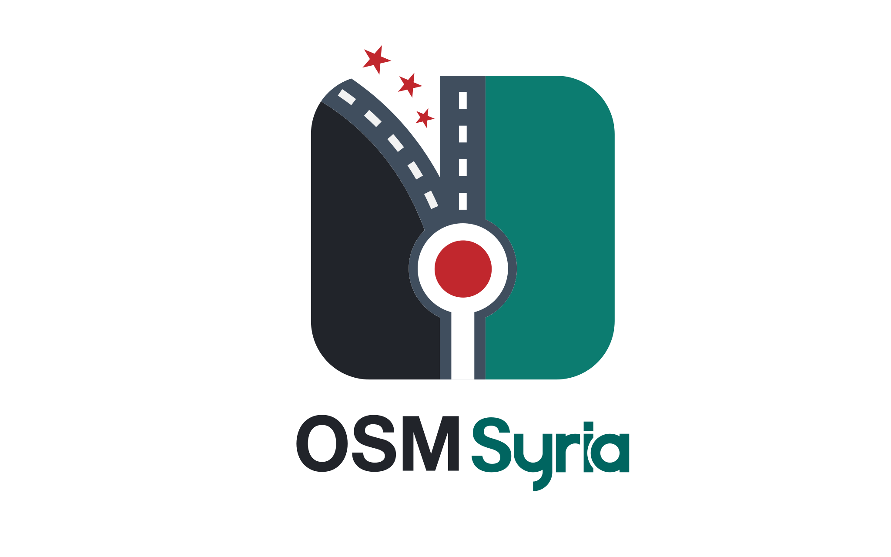

Whether you're in Syria or anywhere in the world — if you love maps, geography, or open technology, the community welcomes you. Most activities are in Arabic.
سواء كنت في سوريا أو في أي مكان في العالم — إن كنت تحب الخرائط والجغرافيا أو التكنولوجيا مفتوحة المصدر، فالمجتمع يرحب بك. معظم الأنشطة باللغة العربية.
OSM Syria Communityمجتمع OSM سوريا

Founding Volunteer · OpenStreetMap Syria
متطوع مؤسس · OpenStreetMap سوريا
Overview
نظرة عامة
OSM Syria is a volunteer-run open mapping community built around OpenStreetMap — the free, editable map of the world. The community emerged in December 2024, a moment of renewed openness in Syria following significant political change, bringing together Syrians inside the country and in the diaspora around a shared love of maps, satellite imagery, and open-source technology.
مجتمع OSM سوريا هو مجتمع تطوعي للخرائط المفتوحة المصدر مبني حول OpenStreetMap — الخريطة الحرة والقابلة للتعديل للعالم. نشأ المجتمع في ديسمبر 2024، في لحظة انفتاح متجدد في سوريا في أعقاب تغيير سياسي كبير، ليجمع السوريين داخل البلاد وفي المهجر حول حبٍّ مشترك للخرائط وصور الأقمار الصناعية والتكنولوجيا مفتوحة المصدر.
The community is deliberately flat — no hierarchy, no titles. Everyone is equal in tasks, activity, participation, and organization. What unites members is a belief that open geographic data is a public good, and that Syria deserves the same quality of map coverage that the rest of the world takes for granted.
المجتمع متعمَّد التسطح — لا هرمية، لا ألقاب. الجميع متساوون في المهام والنشاط والمشاركة والتنظيم. ما يجمع الأعضاء هو الإيمان بأن البيانات الجغرافية المفتوحة ملك عام، وأن سوريا تستحق نفس جودة تغطية الخرائط التي يأخذها بقية العالم كأمر مسلَّم به.
Participation is open to anyone regardless of nationality or location, though most activities are conducted in Arabic. Sessions run both remotely — accessible to the global Syrian diaspora — and in-person inside Syria.
المشاركة مفتوحة للجميع بغض النظر عن الجنسية أو الموقع، وإن كانت معظم الأنشطة تُعقد باللغة العربية. تُقام الجلسات عن بُعد — بما يتيح المشاركة للشتات السوري في أنحاء العالم — وبشكل مباشر داخل سوريا.
Why It Matters
لماذا يهمّ هذا؟
Syria's maps are incomplete, outdated, and in many areas simply missing. After years of conflict and limited access for international mapping organizations, large parts of the country lack basic geographic data — roads, neighborhoods, hospitals, schools — that humanitarian responders, local governments, and communities depend on. Damascus is missing roads on its outskirts; Aleppo lacks residential area coverage outside the city center.
خرائط سوريا ناقصة وقديمة، وفي مناطق كثيرة ببساطة غائبة. بعد سنوات من النزاع ومحدودية وصول منظمات الرسم الخرائطي الدولية، تفتقر أجزاء واسعة من البلاد إلى البيانات الجغرافية الأساسية — طرق وأحياء ومستشفيات ومدارس — التي يعتمد عليها المستجيبون الإنسانيون والحكومات المحلية والمجتمعات. دمشق تفتقر إلى الطرق في ضواحيها؛ وحلب تعاني من غياب تغطية المناطق السكنية خارج مركز المدينة.
Accurate, open maps are not a luxury. They are infrastructure. They determine whether aid reaches the right location, whether a family can share where they live, whether a clinic can be found. OSM Syria exists to close that gap — from within, by Syrians, for everyone.
الخرائط الدقيقة المفتوحة ليست رفاهية. إنها بنية تحتية. تحدد ما إذا كانت المساعدات تصل إلى الموقع الصحيح، وما إذا كانت الأسرة تستطيع مشاركة مكان إقامتها، وما إذا كان يمكن العثور على عيادة. مجتمع OSM سوريا موجود لسد هذه الفجوة — من الداخل، بأيدي سوريين، لصالح الجميع.
Community Goals
أهداف المجتمع
- Help build and maintain open-source maps of Syria that support humanitarian response, connectivity, urban planning, and geographic data sharing
- Expand the social network of people in Syria and the diaspora who care about maps, geography, and open technology
- Organize volunteer activities and free training sessions around mapping and geospatial technology — raising the skills of participants and the community as a whole
- المساعدة في بناء وصيانة خرائط مفتوحة المصدر لسوريا تدعم الاستجابة الإنسانية والتواصل والتخطيط العمراني ومشاركة البيانات الجغرافية
- توسيع الشبكة الاجتماعية للأشخاص في سوريا والمهجر الذين يهتمون بالخرائط والجغرافيا والتكنولوجيا المفتوحة
- تنظيم أنشطة تطوعية ودورات تدريبية مجانية حول رسم الخرائط والتكنولوجيا الجغرافية المكانية — لرفع مستوى مهارات المشاركين والمجتمع ككل
Activities
الأنشطة
Introduction to the OSM community, the project, and its humanitarian and development use cases
تعريف بمجتمع OSM والمشروع وحالات استخدامه الإنسانية والتنموية
Online sessions to map specific areas — adding schools, hospitals, roads, and neighborhoods to OSM for Syria's governorates
جلسات أونلاين لرسم مناطق محددة — إضافة المدارس والمستشفيات والطرق والأحياء إلى OSM لمحافظات سوريا
Direct meetups and conversations inside Syria around mapping, open technology, and community building
لقاءات ومحادثات مباشرة داخل سوريا حول الخرائط والتكنولوجيا المفتوحة وبناء المجتمع
Participation in State of the Map events and potential hosting of local mapping conferences with talks, workshops, and demos
المشاركة في فعاليات State of the Map واحتمال استضافة مؤتمرات محلية للخرائط مع محاضرات وورشات عمل وعروض توضيحية
My Role
دوري
- Founding volunteer: Helped establish the community from the ground up — defining its structure, values, and open invitation to Syrians everywhere
- Community organizing: Designed and led the community registration process, meeting documentation, and communication infrastructure (Telegram, shared drives, meeting records)
- Bridge to HOT: Connected the OSM Syria community to HOT's global network, tools, and expertise — bringing international open mapping resources directly to Syrian volunteers
- Knowledge sharing: Led sessions on OSM tools, humanitarian mapping workflows, and satellite imagery interpretation for new community members
- Representation: Represented the Syrian OSM community in wider OSM forums and international open mapping discussions
- متطوع مؤسس: أُساهم في تأسيس المجتمع من الصفر — بتحديد هيكله وقيمه والدعوة المفتوحة للسوريين في كل مكان
- تنظيم المجتمع: أُصمِّم وأقود عملية تسجيل المجتمع وتوثيق الاجتماعات والبنية التحتية للتواصل (تيليغرام، الأقراص المشتركة، سجلات الاجتماعات)
- جسر إلى HOT: أربط مجتمع OSM سوريا بالشبكة العالمية لـ HOT وأدواتها وخبراتها — وأُوصل موارد رسم الخرائط المفتوحة الدولية مباشرة إلى المتطوعين السوريين
- مشاركة المعرفة: أقود جلسات حول أدوات OSM وسير عمل الرسم الخرائطي الإنساني وتفسير صور الأقمار الصناعية للأعضاء الجدد
- التمثيل: أُمثِّل مجتمع OSM السوري في المنتديات الأوسع لـ OSM والنقاشات الدولية للخرائط المفتوحة
Community Map
خريطة المجتمع
Community member locations across Syria and the global diaspora — last updated 19 May 2026. You can always check the latest member locations on the live community map.
مواقع أعضاء المجتمع في سوريا والشتات العالمي — آخر تحديث: 19 مايو 2026. يمكنك دائماً الاطلاع على أحدث مواقع الأعضاء على خريطة المجتمع المباشرة.